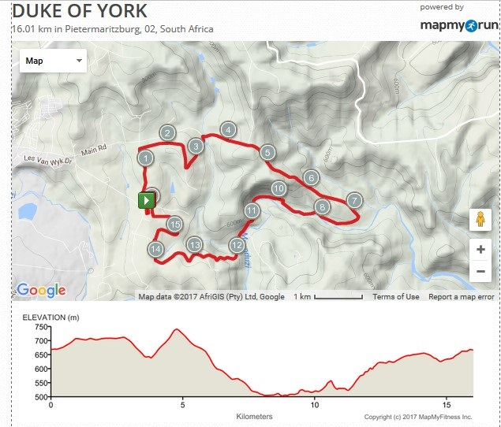

Duke ofYork.
A 16 km road race whose trophy tradition reaches back to 1926, preserved here through route material and original result records.
One of South Africa's
old road races.
The floating trophy was donated in 1926 by the Duke of York Lodge to the Pietermaritzburg Athletic and Cycling Club. The first race followed in 1927, and the event became part of Collegians Harriers' hosted-race history.
This page separates enduring history from future scheduling. A new race date will only be added once formally confirmed.
Route
reference.
The retained route and elevation images are historical reference material and should not be treated as a confirmed route for a future edition.

16 km through Pietermaritzburg
Course information is retained for the record. Always use the newest official flyer when the event returns.
Open elevation profile →Result
archive.
Eight approved seasons are now included in the central searchable archive.
Duke of York Results
Published category and finish records
Duke of York Results
Published category and finish records
Scanned Duke of York Results
Five-page preserved historical record
Complete race and event archive
2012, 2013, 2014, 2015 and 2016 are also indexed